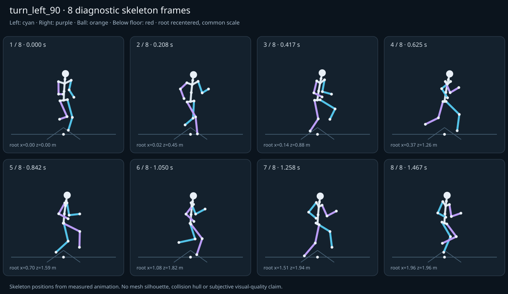

כל הקליפים · תצוגת התנועה · JSON המקור
ציון 90.1 · כיסוי 100%
הסוליות נמדדות בתרחיש תנועה חיצוני מוצהר; Root בנכס נשאר קבוע. הרציפות משתמשת בפוזה המקומית.

| מדד | מצב | ערך | ציון | ראיות |
|---|---|---|---|---|
| החלקת רגליים | ירוק | 0.000432 | 99.14 | ראיות מקוריות{
"coordinateSpace": "native GLB plus explicitly declared external actor position and heading, applied once",
"supportSource": "declared",
"windows": 5,
"samples": 149,
"maxDriftMeters": 0.00073,
"p95SpeedMetersPerSecond": 0.040806,
"worst": {
"bone": "RightFoot",
"t": 0.516667,
"start": 0.233333,
"end": 0.526667,
"driftMeters": 0.00073
}
} |
| חדירה לרצפה | ירוק | 0 | 100 | ראיות מקוריות{
"samples": 3620,
"floorY": 0,
"probeKind": "declared sole probes plus skeletal joint centers (no mesh surfaces)",
"maxDepthMeters": 0,
"worst": {
"t": 0,
"bone": "LeftFoot",
"depthMeters": 0,
"y": 0.004
}
} |
| קפיצות פוזה | צהוב | 1.214688 | 75.71 | ראיות מקוריות{
"adjacentPairs": 180,
"observations": 3060,
"maxDegrees60Hz": 11.327636,
"maxMarkerStepHeight60Hz": 0.048588,
"maxRootStepHeight60Hz": 0.021203,
"worst": {
"ratio": 1.214687939357208,
"t": 0.766667,
"previousTime": 0.758333,
"bone": "RightFoot",
"markerStepHeight60Hz": 0.048588,
"degrees60Hz": 4.206428
}
} |
| חריגות אנטומיות | ירוק | 0 | 100 | ראיות מקוריות{
"testedFrames": 181,
"affectedFrames": 0,
"checks": 3077,
"maxLimbFlexionDegrees": 113.316692,
"maxRelativeSegmentLengthChange": 0,
"hingeDirectionChecked": true,
"axialTwistChecked": false,
"violations": []
} |
| מגע בכדור | לא חל | — | — | ראיות מקוריות{} |
| כניסה ויציאה מול המתנה | צהוב | 1.828849 | 67.57 | ראיות מקוריות{
"entry": {
"ratio": 1.8288491333253665,
"t": 0,
"idleTime": 3.9,
"markers": 17,
"rmsPositionHeight": 0.073154,
"rmsRotationDegrees": 27.23786,
"rmsVelocityHeightPerSecond": 1.102775,
"velocityEvaluated": true
},
"exit": {
"ratio": 1.81756580190282,
"t": 1.466667,
"idleTime": 3.866667,
"markers": 17,
"rmsPositionHeight": 0.072703,
"rmsRotationDegrees": 27.424119,
"rmsVelocityHeightPerSecond": 1.124719,
"velocityEvaluated": true
},
"worstEndpoint": "entry",
"alignment": "horizontal root translation; raw asset poses used when provided"
} |
| מהירות גוף מול צעדים | ירוק | 0.10913 | 89.09 | ראיות מקוריות{
"rootSource": "sampled presented root",
"rootSpeedMetersPerSecond": 2.149992,
"observedRootSpeedMetersPerSecond": 2.149992,
"referenceRootSpeedMetersPerSecond": 2.149992,
"supportSource": "declared",
"backwardSweepSpeedMetersPerSecond": 1.915365,
"cadenceStepsPerSecond": 2.72727,
"impliedStrideMeters": 1.404602,
"rootStrideMeters": 1.576662,
"supportSweeps": [
{
"bone": "LeftFoot",
"start": 0,
"end": 0.16,
"duration": 0.16,
"sweepMeters": 0.250081,
"speedMetersPerSecond": 1.563004
},
{
"bone": "LeftFoot",
"start": 0.6,
"end": 0.893333,
"duration": 0.293333,
"sweepMeters": 0.627311,
"speedMetersPerSecond": 2.138561
},
{
"bone": "LeftFoot",
"start": 1.333333,
"end": 1.466667,
"duration": 0.133333,
"sweepMeters": 0.206779,
"speedMetersPerSecond": 1.550845
},
{
"bone": "RightFoot",
"start": 0.233333,
"end": 0.526667,
"duration": 0.293333,
"sweepMeters": 0.570589,
"speedMetersPerSecond": 1.94519
},
{
"bone": "RightFoot",
"start": 0.966667,
"end": 1.26,
"duration": 0.293333,
"sweepMeters": 0.56184,
"speedMetersPerSecond": 1.915365
}
]
} |
| סימטריה | ירוק | 0 | 100 | ראיות מקוריות{
"mode": "mirrored clip pair",
"modeSource": "declared",
"structuralMismatch": 0,
"segments": [
{
"segment": "Arm-ForeArm",
"mismatch": 0
},
{
"segment": "ForeArm-Hand",
"mismatch": 0
},
{
"segment": "UpLeg-Leg",
"mismatch": 0
},
{
"segment": "Leg-Foot",
"mismatch": 0
}
],
"motionRmsHeight": 0,
"worstMotion": {
"t": 0.391667,
"errorHeight": 0
},
"bilateralPoseRmsHeightUnscored": 0.206252,
"note": "One-sided authored actions are checked for structural symmetry only."
} |